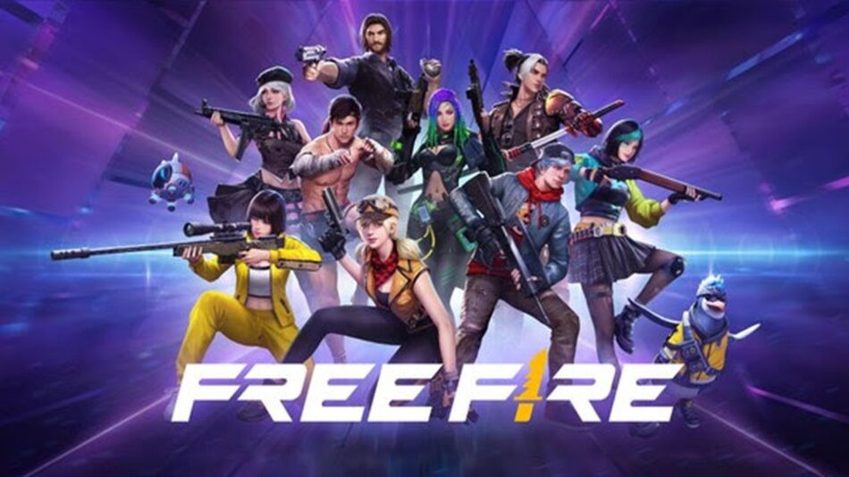

- HOME
- AVALIAÇA DOS JOGOS
- SUGESTAO DE JOGOS PARA VOCE
- SOBRENOS
- CONTATO
Avaliação de jogos
Free Faire

O jogo do Free Fire,criado por.....é um jogo onlaine e de aplicativos de celular
Atinge o publico na maioria de joves e adolecente, entre 10 á 23 anos, e foi um dos jogos mais pupulares de todos tempos.
Pessoas jogam esse jogo de forma individual , em duplas ou formar esquadrões se até 4 pessoas.
Eduardo Girrardi
Ana Caroline Formaio Wessling
Larissa Boing
Leticia Berkembrock
Felipe Pinheira
Primeiramente, Free Fire é um jogo mobile e se tornou um grande sucesso em escala
global com um recorde de mais de 150 milhões de usuários ativos diários no segundo
trimestre de 2021. Na mesma linha e de acordo com App Annie, foi classificado como
o terceiro jogo Battle Royale mais baixado globalmente nas lojas de aplicativos do
Google Play e iOS combinadas durante esse período.
Neste sentido, o jogo consiste em um total de cinquenta jogadores que caem de paraquedas em uma ilha em busca de armas e equipamentos de modo a ser o último sobrevivente para ser o campeão. Os jogadores escolhem livremente a posição inicial do pulo, pegam armas e suprimentos para aumentar o tempo de vida na batalha.